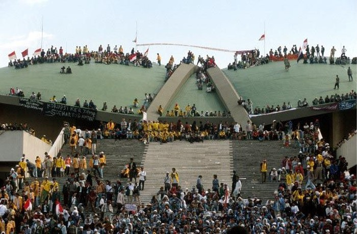
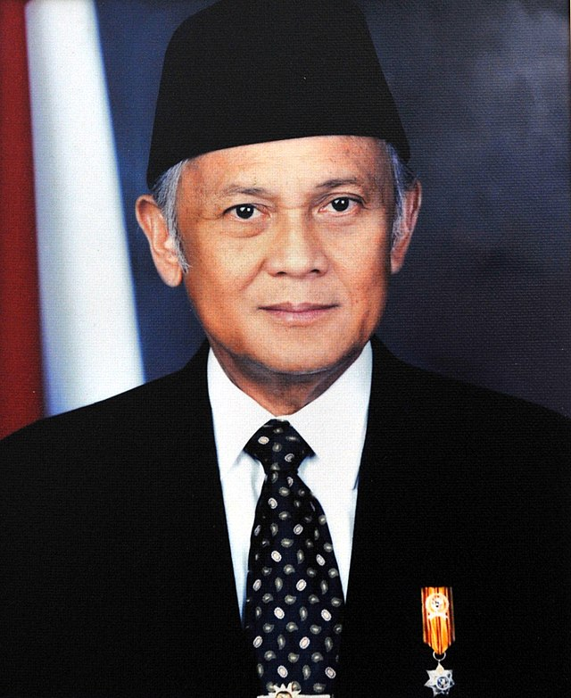

|
3.2.1 REFORMASI INDONESIA

Terjadi setelah Soeharto mundur dari jabatannya sebagai Presiden RI, rakyat Indonesia berbahagia akan lahirnya era baru, era reformasi.
Di hari yang sama Soeharto mengundurkan diri, Bacharuddin Jusuf Habibie menerima mandat pergantian Presiden RI ke-3. Di era reformasi, Habibie membentuk Kabinet Reformasi Pembangunan.

B.J. Habibie.
MPR melaksanakan Sidang Istimewa MPR pada 10-13 November 1998. Hal tersebut menghasilkan ketetapan MPR yang bersangkutan dengan tujuan dan pelaksanaan reformasi.
|
Tujuan reformasi sebagai berikut:
- Mengatasi krisis ekonomi untuk menghasilkan stabilitas moneter yang tanggap terhadap pengaruh global dan pemulihan aktivitas usaha nasional.
- Mewujudkan kedaulatan rakyat dalam seluruh sendi kehidupan.
- Menegakan nilai hukum berdasarkan kebenaran dan keadilan, HAM, dan perbaikan sikap mental.
- Melaksanakan dasar-dasar kerangka dan agenda reformasi pembangunan agama dan sosbud dalam usaha mewujudkan masyarakat madani.
Pada bidang ekonomi, reformasi bertujuan membenahi lembaga keuangan terutama sektor perbankan. Serta, meningkatkan keterbukaan pemerintah dalam pengelolaan usaha.
Pada bidang politik, menegakkan kedaulatan rakyat dan pembagian wewenang kekuasaan antara eksekutif, legislatif, dan yudikatif.
Pada bidang hukum, menegakkan supremasi hukum dan terbentuknya sikap dan perilaku anggota masyarakat.
Pada bidang SosBud, membina kerukunan antar umat beragama serta pembentukan dan pemberdayaan jaringan kerja antar umat beragama dan meningkatkan pembangunan akhlak mulia dan moral luhur masyarakat.
B.J. Habibie meskipun menerima kecaman dan kritik dari berbagai pihak, ia mampu mempertahankan persatuan dan kesatuan bangsa.
|